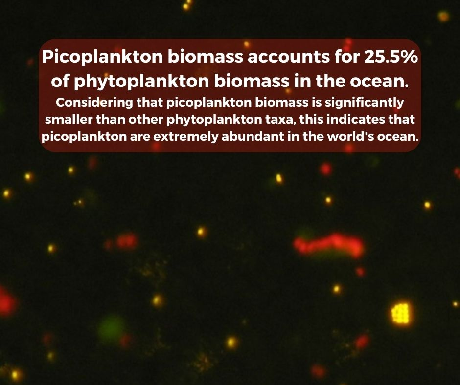

HOME
RESULTS
ALL
GLOBAL
COCCOLITHOPHORES
PICOPLANKTON
ABOUT
CONTACT
PICOPLANKTON EXPLORATION
GOAL AND ABOUT PICOPLANKTON
Picoplankton are the
smallest phytoplankton in the ocean
(composed by cells between 0.2 and 2 μm) and are extremely abundant in almost every aquatic ecosystem. Picoplankton form the base of microbial food webs and are an essential energy source for other marine organisms and an important producer of oxygen found in the atmosphere. Because they are so tiny, picoplankton require much less nutrients to grow, so they are able to thrive even in oligotrophic conditions, meaning
low-nutrient regions
. A large portion of the ocean, especially regions near the center of ocean basins, are oligotrophic ecosystems. Picoplankton are the only primary producers that can grow in these areas, and are therefore critical components of the food web in many parts of the world.
My results show
large declines
in picoplankton biomass over the next century, as the ocean heats up. Despite the overall negative trend in picoplankton biomass, the northern Pacific Ocean actually shows a prominent increase in picoplankton. My analysis explores the reasons for the decrease in global biomass and why the northern Pacific ocean is opposite to this trend. I hypothesize that this is due to changes to nutrient availability over the next century, enabling picoplankton to outcompete other phytoplankton since they depend on less resources, or due to a decrease in predator biomass, allowing for picoplankton to thrive.

Daniel Vaulot, CNRS, Station Biologique de Roscoff, CC BY-SA 2.5
https://creativecommons.org/licenses/by-sa/2.5, via Wikimedia Commons
GLOBAL RESULTS AND ANALYSIS
Plotting the picoplankton biomass at the current world temperature, the biomass at the year 2100 and the differences between these two times reveals that as time progresses, picoplankton biomass will decrease significantly throughout the ocean. The largest decreases in biomass occur in regions where picoplankton have the most biomass initially, namely the equatorial upwelling and coastal regions. The top two plots reveal that throughout the next century, the global scale patterns of picoplankton biogeography do not change, since the majority of the ocean sees a decrease in biomass of a similar magnitude. There are many detrimental effects that must be considered when discussing a decrease in picoplankton biomass. Picoplankton are generally the majority, if not the only, plankton in oligotrophic regions. Thus, they are
imperative to the production of oxygen and carbon cycling
in these regions, which are essential for maintaining a healthy balance of carbon that is naturally released and absorbed by oceans, effectively making planet Earth hospitable for life. Specifically, the ocean absorbs about 25% of the carbon dioxide emissions produced by humans and 90% of the excess heat which is generated by these carbon dioxide emissions. In addition, picoplankton are the base of the food web in the ocean, so a decrease in picoplankton affects all trophic levels above them and the health of the entire marine food web. Even if picoplankton don’t necessarily go extinct, their decline has the potential to cause other organisms to go extinct or drastically decrease in biomass. A consistent biomass level of plankton is essential for maintaining a healthy and diverse ocean, thus these changes to the ecosystem will cause detrimental effects to the equilibrium of our oceans.
Despite the similarity in large-scale patterns,
at regional scales certain areas in fact show increases in picoplankton biomass that defy the global decreasing trend
. In the difference plot, we can observe increases in biomass in the high latitude ocean regions. For example, in the southern oceans, picoplankton exhibit a prominent increase in biomass in some patches; this increase in biomass does not align with the general decrease that is present in picoplankton biomass worldwide. These increases can likely be attributed to a
decrease in nutrients availability
in this general region. Rising ocean temperatures typically cause surface waters to become less nutrient rich because as temperatures of these waters rise, the amount of mixing that occurs between the surface waters and the nutrient-rich, deep ocean waters decreases. Picoplankton are able to thrive in oligotrophic (low nutrient) conditions, unlike their other plankton counterparts. Hence, as the nutrient levels in this region decrease, picoplankton exhibit a competitive edge over other smaller phytoplankton species. In this case, an increase of picoplankton does not necessarily indicate a positive. When picoplankton are the only dominating plankton that are essential for carbon cycling, they actually sink carbon slower due to the fact that their physical size is smaller. A basic property of sinking speed is that smaller particles sink slower than larger particles. Hence, a decrease in general phytoplankton and an increase in only picoplankton can also affect the equilibrium in the ocean.